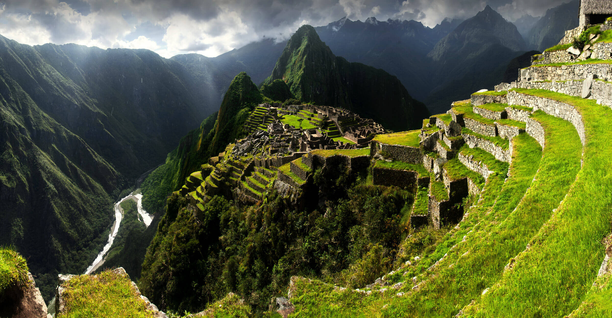

Welcome to Travel Destination blog, your gateway to exploring the world's
most captivating cities and landmarks. Step into the enchanting streets
of Paris, where the iconic Eiffel Tower stands tall and the Louvre Museum
invites you to delve into centuries of art and culture. Lose yourself in
the romance of this vibrant city, adorned with charming cafes and picturesque
streets that whisper tales of its rich history that promises an unforgettable journey
for travelers of all ages.
"From the awe-inspiring architecture to the fascinating history,
Machu Picchu promises an unforgettable journey for those
seeking adventure and exploration."
Vibrant Cultural Heritage.

Vibrant Machu Picchu.
Embark on an adventure to the ancient ruins of Machu Picchu, Peru,
and immerse yourself in the mystical beauty of this UNESCO World Heritage Site.
Trek through the breathtaking Andes Mountains, explore Inca citadels, and witness
panoramic views of the lush Peruvian landscape.